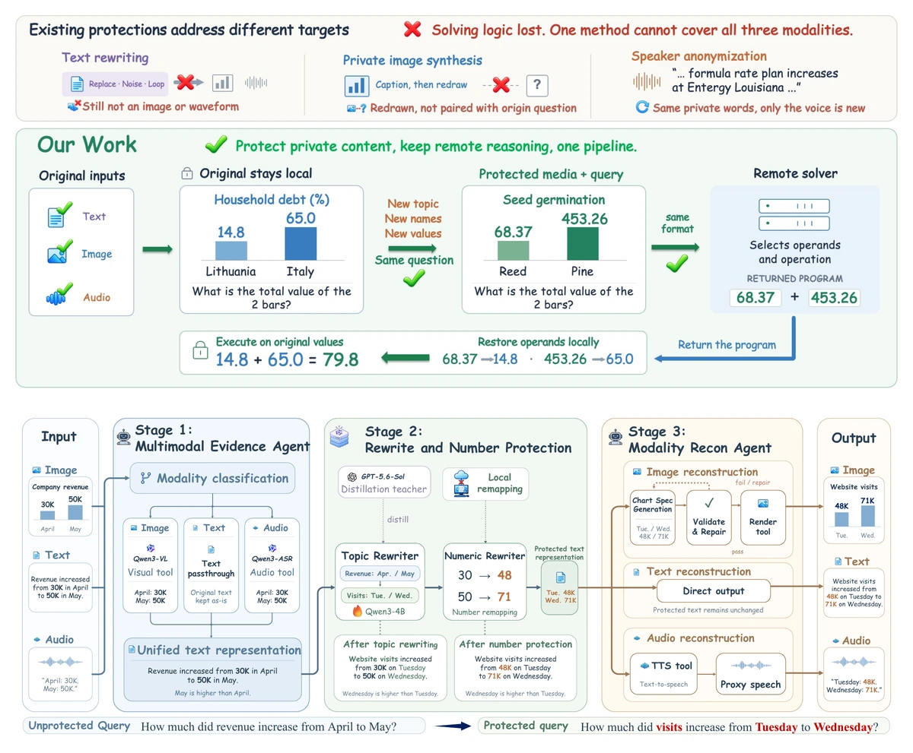

ReCast: Contract-Preserving Protection for Fixed-Interface Multimodal Reasoning
Protecting private image, audio, and text inputs while preserving task structure and modality-specific interfaces for remote multimodal reasoning.
Privacy-Preserving Multimodal AI
Welcome! I am a second-year undergraduate student at Beijing Jiaotong University. My research interests span natural language processing, LLM agents, retrieval-augmented generation, and trustworthy multimodal AI, with a particular focus on privacy and security.
I am currently working on privacy in multimodal AI systems, with a focus on privacy-preserving multimodal interaction and reasoning. I am also exploring AI for Software Engineering (AI4SE) and LLM Agents & Multi-Agent Collaboration.
Research
† equal contribution ‡ project lead * corresponding author

Protecting private image, audio, and text inputs while preserving task structure and modality-specific interfaces for remote multimodal reasoning.
Selected work
Research & Engineering
Intelligent Campus Learning and Life Assistant
Campus-Mind is an intelligent assistant for the Beijing Jiaotong University. It brings together campus information Q&A, personalized academic analysis, English-learning support, project workspaces, and long-term memory in one system.
Internal beta testing is planned for summer 2026, with campus deployment targeted for September 2026.
Recognition
Background
Undergraduate
2025 — Present
B.S. in Computer Science and Technology · Expected 2029